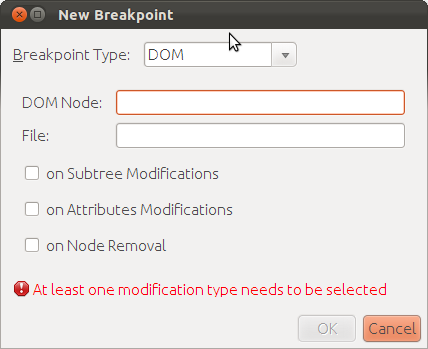
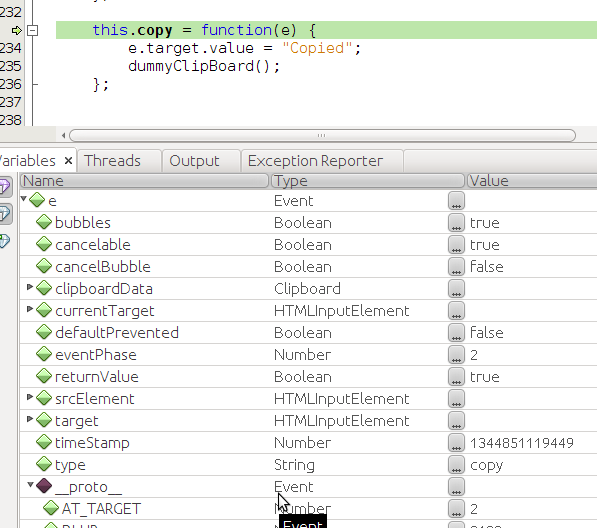
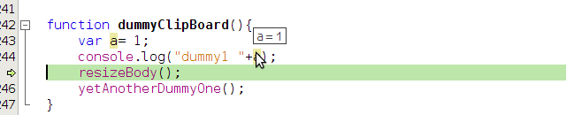
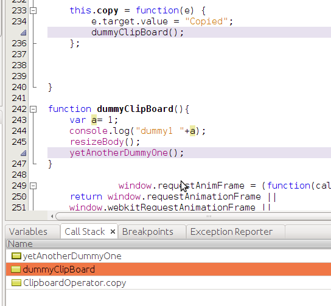

DOM & line breakpoints - practical
-
each item list below triggers some JavaScript function
- to try it, you need to set correct breakpoints and add 2 watches: this.operations (objects' variable) and operator (object). Make sure that Variables and Watches windows show these watches and their values while testing cases below
- each item in the list says where you should place breakpoint
- for the "Clone me", add breakpoint to the <ul> element(because new <li> child elements will be created)
Number of operations: 0
- Remove me (breakpoint on node removal + breakpoint on nonDOM line)
- Remove me 2 (breakpoint on node removal + breakpoint on nonDOM line)
- Change onclick action to show alert message (breakpoint on attribute change - jQuery)
- Remove title (breakpoint on attribute - jQuery)
- Add title (breakpoint on attribute change - jQuery)
- Turn me into link (breakpoint on subtree modifications)
- Clone me (breakpoint on subtree modifications)
- Make me blue (breakpoint on attribute change - plain JS)
- Dummy click (breakpoint on simple function)
XMLHTTP breakpoints - practical
- Click to make GET Request
- add XMLHTTPRequest breakpoint for this URL: data/lines.json
- Click to make jQuery getJSON Request
- add XMLHTTPRequest breakpoint for this URL: data/lines.json
- Click to make GET Request
- add XMLHTTPRequest breakpoint for partial URL
- 3 requests will be made, URL of 2 of them matches "dummy", so code should stop on 2 breakpoints
- Click to make GET Request
- add XMLHTTPRequest breakpoint for empty URL - should stop on all requests to any URLs
Output log:
Events breakpoints - practical
There is a lot of categories of events. Following examples tests at least one action of each category. It means that first of all you need to create breakpoints for each category and its selected action. If particular type of event is not available in your browser, the appropriate item is crossed
- Animation
- Clipboard - copy
- Control - change
- DOM Mutation - DOMNodeInserted
- Device - deviceorientation
- Keyboard - keypress
- Load - load
- Mouse - dblclick
- Timer - timer fired
- Touch - touch start
Output:
Breakpoints - usecases
All following usecases should be tested on both configuration: Internal web server, none server (and if available custom server as well)
- Task: Create new DOM breakpoint from DOM Tree window
- Run HTML page
- Select some node in DOM Tree, right mouse click and add some breakpoint
- Result: Appropriate breakpoint is created and list in Breakpoints window
- Task: Create new DOM breakpoint from Breakpoints window

- Open HTML page in IDE
- Open Breakpoints window (Alt+Shift+5)
- Click on "Create new breakpoint" icon, set Type to "DOM"
- Fields for line and DOM node are not writable
- Result: Appropriate breakpoint is created and list in Breakpoints window
- Task: Create new DOM breakpoint from Debug|New Breakpoint
- Result: Appropriate breakpoint is created and list in Breakpoints window (issue 216328)
- Task: Create new line breakpoint
- Click on some line
- Try one of following: (1) Right mouse click and "Toogle line breakpoint" or (2) keyboard shortcut Ctrl+F8 or (3) click on line number
- Result: Appropriate breakpoint is created and list in Breakpoints window
- Task: Create new watch
- Click on some variable
- Invoke New Watch dialog from context menu, type variable name and confirm it
- Result: New watch is created (issue 216468) and it is listed in Variables and Watches windows
Debugging
- Most of following tasks can be performed with this file and JavaScript file js/debug_events.js. In the JS file, there you can add breakpoints for e.g. ClipboardOperator.copy(). All following steps assume you did that.
- Task: Test common debugging steps (Step Into, Step Over etc.) in local and remote files
- You can use above listener for Clipboard-copy that calls some dummy functions from different js files
- If necessary each js file is opened in editor during debugging
- Result: All debugging "steps" works as expected
- Task: Variables
- While debugging, check the Variables window
- Result: The window should contain simple variables and their values as well as objects and their properties and values. Each object should have __proto__ property. In Global there are variables/objects with global scope

- Task: Variable value
- While debugging, hover over some variable in editor
- Result: Value of the hover variable is displayed

- Task: Call Stack window
- While debugging the Clipboard-Copy scenario, open Call Stack window (if not already)
- Result 1: As you Step Over, Step Into etc. the current call stack is updated.
- Result 2: Check that if you right click on some item and select Go To Source the appropriate file is opened in Editor on given line
- Result 3: Call stack lines in editor are highlighted
- Task: Call Stack - Copy
- While debugging the Clipboard-Copy scenario, open Call Stack window (if not already)
- As you Step Over, Step Into etc. the current call stack is updated.
- Right click on some item in Call Stack window and select "Copy Stack".
- Result: Current call stack is copied to Clipboard, you can verify it by pasting it to some text editor.
- Task: Call Stack - Make current
- While debugging the Clipboard-Copy scenario, open Call Stack window (if not already)
- As you Step Over, Step Into etc. the current call stack is updated.
- Right click on some item in Call Stack window and select "Make current".
- Result: Editor show corresponding source code, selected frame is bold. Make sure that Variables window contains only variables (and their values) that are in the given frame context

- Task: Watches
- Add new watch for some expression
- Result 1: New watch is listed in Variables window (if Show watches inside Variables view is turned on). Toggle the Show watches inside Variables view and make sure that visibility of watches in Variables view changes
- Result 2: New watch is listed in Watches window.
- Result 3: Type and Value of the watched expression matches expected values. You can confirm this using Chrome DT and its watch expression feature
- Task: Variable value in tooltip
- Add new watch for some expression
- Result 1: New watch is listed in Variables window (if Show watches inside Variables view is turned on). Toggle the Show watches inside Variables view and make sure that visibility of watches in Variables view changes
- Result 2: New watch is listed in Watches window.
- Result 3: Type and Value of the watched expression matches expected values. You can confirm this using Chrome DT and its watch expression feature
- Task: Expandable tooltip
- Add line breakpoints in debug_event.js for the line with "foo=1"
- Run the file
- Result: Code execution stops on the line with breakpoint, tooltip for object "e" is expandable and looks like the one on the screenshot below. You can use this tooltip on any object.
- Result 2: New watch is listed in Watches window.
- Result 3: Type and Value of the watched expression matches expected values. You can confirm this using Chrome DT and its watch expression feature